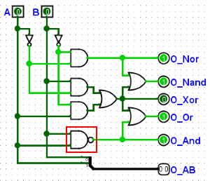

A janela de Vetor de Teste
A janela de Vetor de Teste é similar à aba Tabela da janela de Registro. Você pode carregar um vetor de teste de um arquivo, e o Logisim começará a executar testes no circuito atual. Como a janela de registro, existe apenas uma janela de vetor de teste para o projeto, e a tabela será alterada para refletir qual circuito está sendo simulado na janela do projeto. Note, no entanto, que o módulo de Vetor de Teste executa uma cópia separada do simulador de circuitos, e portanto não interfere, e não é influenciado pela simulação na janela do projeto.
Para o exemplo, testaremos o circuito abaixo. Este circuito fornece os resultados de cinco funções lógicas a partir de duas entradas. Ele contém um erro porque a porta NAND inferior deveria ser uma porta AND.

O arquivo de vetor de teste se parece com isto:
A B O_Nor O_Nand O_Xor O_Or O_And O_AB[2] 0 0 1 1 0 0 0 00 0 1 0 1 1 1 0 01 1 0 0 1 1 1 0 10 1 1 0 0 0 1 1 11
Para executar o teste, selecione o menu | Simular |→| Vetor de teste | então use o botão Carregar Vetor. Selecione o arquivo de vetor que você construiu. A simulação é executada imediatamente e uma tabela é exibida com o resultado.

Qualquer saída incorreta será marcada em vermelho. Passe o mouse sobre a caixa vermelha para ver qual deveria ter sido a saída, de acordo com o vetor de teste. Linhas com saídas incorretas são classificadas no topo da janela.
O formato do arquivo é simples. Você pode usar o módulo de Registro (com "Incluir Linha de Cabeçalho" selecionado na aba de saída de arquivo) para começar, já que na maioria dos casos o módulo de Registro produz o mesmo formato usado pelo módulo de Vetor de Teste.
Interactive Test Execution
Each row in the Test Vector window has two buttons that allow you to manually interact with individual tests:
- "Show" button (first column): This button previews the circuit state without checking outputs.
- Combinational tests (seq=0): Resets the circuit, sets the input values, and propagates signals. Only the clicked row is highlighted in green to show it was executed.
- Sequential tests (seq>0): Resets the circuit, then runs all prior sequential steps in the set (from seq 1 up to the target step), propagating after each step. All executed sequential steps are highlighted in green to show the execution path.
- "Set" button (second column): This button sets input values and may execute tests.
- Combinational tests (seq=0): Resets the circuit, applies the test inputs, then propagates signals. Only the clicked row is highlighted in green to indicate it was executed.
- Sequential tests (seq>0): Does NOT reset the circuit and does NOT run any other tests. Simply sets the input values for that single step only, then propagates signals. Only the clicked row is highlighted in green. This allows you to manually step through a sequence by setting individual step values without resetting or running previous steps.
- For either button, if you turn off Auto-Propagation in the Simulation menu, it will not propagate the last step in the sequence (or the only step in the combinational test), stopping after setting the input pins. This allows you to single-step the circuit through the propagation of that line.
Highlighting behavior:
- When the Show button is clicked on a combinational test, only that single row is highlighted in green.
- When the Show button is clicked on a sequential test, all sequential steps (seq > 0) up to and including the target step are highlighted in green.
- When the Set button is clicked, only the clicked row is highlighted in green, regardless of whether it's combinational or sequential.
- Highlighting is cleared when a new vector file is loaded or when the circuit simulator is reset.
Anterior: Vetores de Teste | Próximo: Formato de Arquivo de Vetor de Teste.